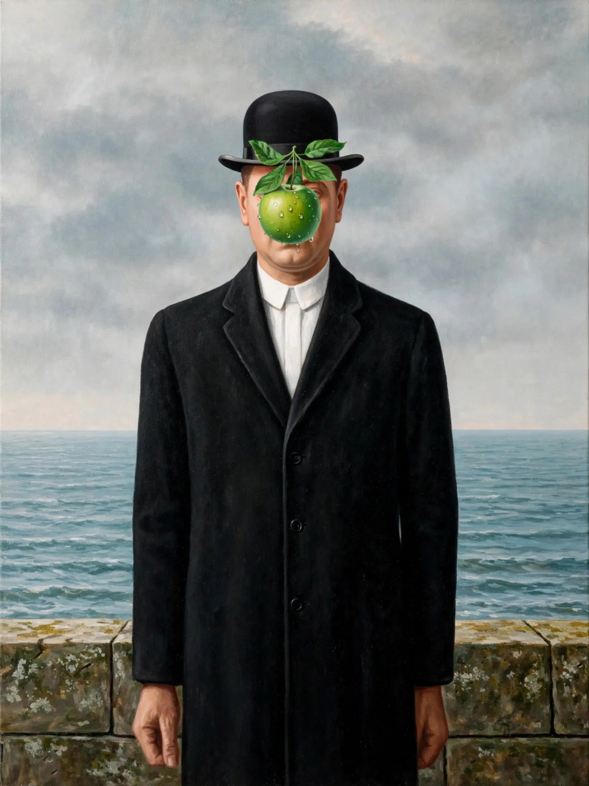
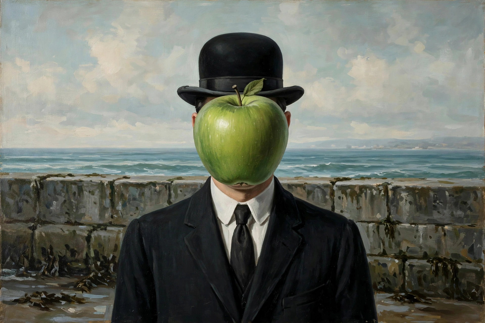

René Magritte


The Son of Man (1964): a bowler-hatted man in a suit whose face is hidden by a floating green apple, the sea behind himRené François Ghislain Magritte (21 November 1898 – 15 August 1967) was a Belgian surrealist artist known for his depictions of familiar objects in unfamiliar, surprising and even disturbing contexts, often with a deadpan, illustrative style. His work is characterised by a witty and thought-provoking combination of images that challenge observers' preconditioned perceptions of reality.
Working quietly in Brussels as a commercial artist, Magritte created icons of modern art: The Treachery of Images (1929, a pipe captioned 'Ceci n'est pas une pipe'), The Son of Man (1964, a bowler-hatted man obscured by an apple), Golconda (raining bowler-hatted men) and The Empire of Light (night street under a day sky). His imagery profoundly influenced Pop art and conceptual art.